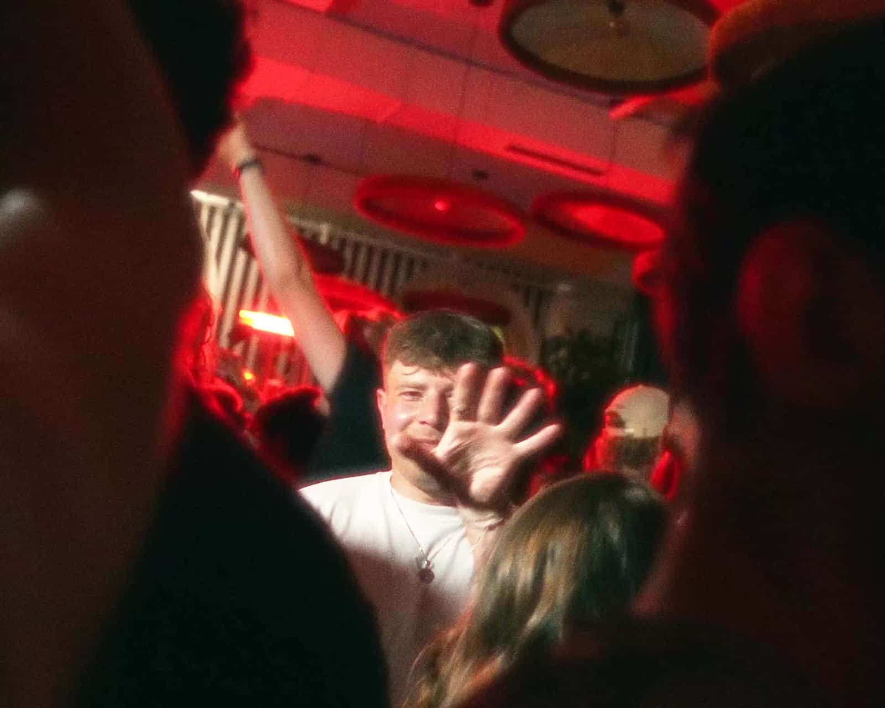
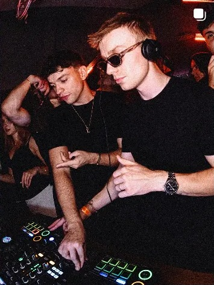

Video
Brand v1.2 · 05 · TikTok, Reels · HyperFrames
1 · Hook + Titel

Event aufbauen
Teil 1
Wie man ein Event
2 · Name + Untertitel

JuliusKPO
Wieder im Office
tot 250 px
tot 480 px
tot 140 px
3 · Grafik von oben

01
Kosten
kalkulieren
kalkulieren
Kosten
Gewinn
Die Kosten
WerkzeugImmer HyperFrames über ~/kpo-reels. Danach Qualitätscheck: -14 LUFS, True Peak ≤ -1 dB, 1080 × 1920, 30 fps, 8–12 Mbit/s.
Tote ZonenTikTok + Instagram: oben 250, unten 480, rechts 140 px frei.
Boxen statt SchattenTitel auf voller schwarzer Box, Untertitel und Name auf 40 %-Box, Padding oben = unten.
UntertitelKlein (ca. 40 px), Bastardo Black, −5 %, Box 40 %, ein Wort rot, max. 3 Wörter. Direkt nacheinander, Fade-out wenn nichts folgt.
BewegungHook zuerst, Jump Cuts mit leichtem Punch-in. Grafiken groß von oben, danach klein als Chip.
SoundPixabay-Effekte aus ~/kpo-reels/sfx, dezent unter der Sprache.
NieOutro/Endcard, Timeline-Balken, Bauchbinde, Textschatten.
Werte: brand/tokens.json → videobrand/README.md